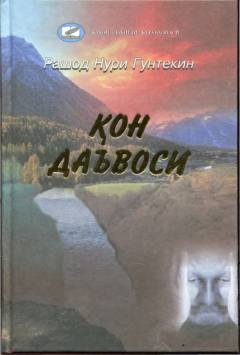

ҚДOchig'i, qasos va adovat illatlari hamda insoniy fojialar tasvirlangan ta'sirli roman.
Tanikli turk yozuvchisi Rashod Nuri Güntekinning ushbu romanida qasos o'tiga yongan kishilarning qilmishlari, kin, adovat va jaholatning insoniylikni mahv etuvchi illat ekanligi ta'sirli ochib beriladi. Qahraton qishda olis qishloqqa yordam so'rab kelgan o'qituvchi va og'ir xastalikka chalingan doktor o'rtasidagi dramatik uchrashuv voqealari bayon qilingan.